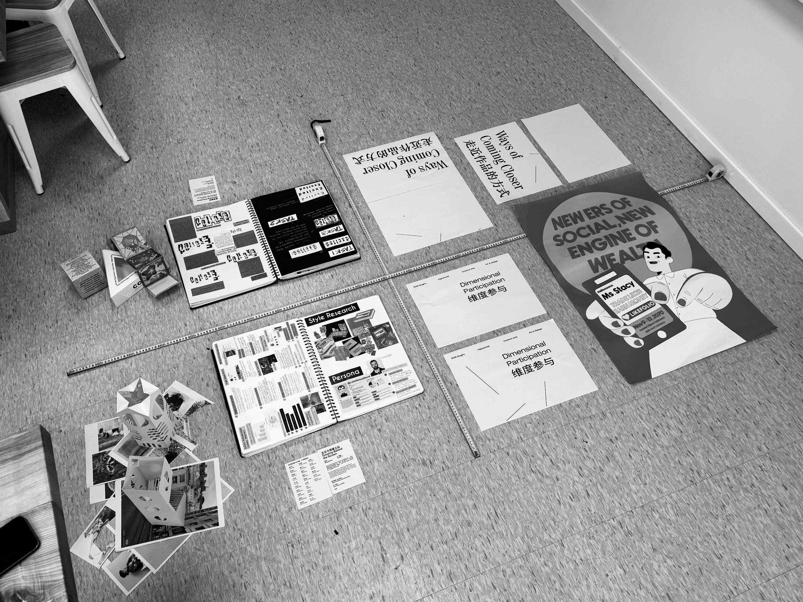
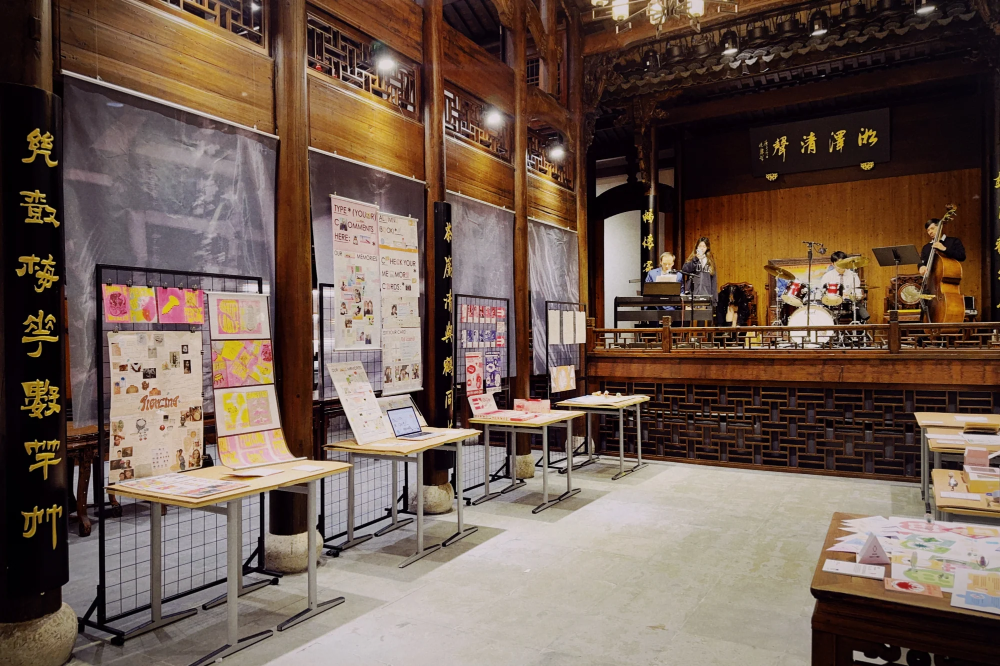
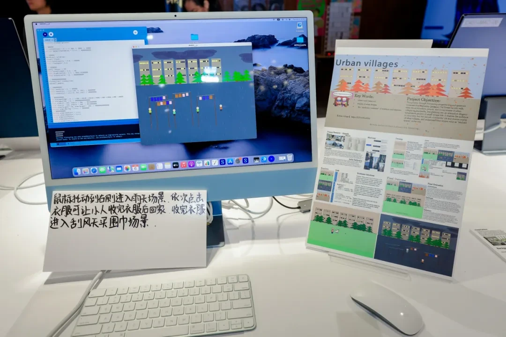
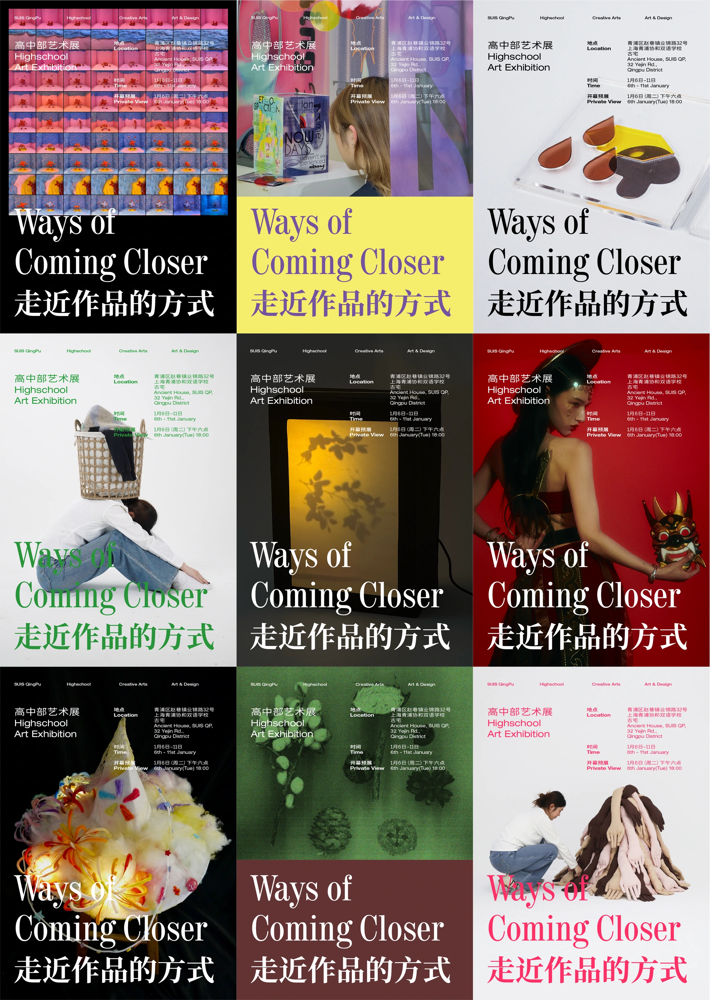

Ways of Coming Closer
高中部艺术展
- 主策展人
- 视觉设计
- 落地执行
在无法移动 10 米长桌、没有物理隔断的古宅里，统筹 50 多件无统一主题的跨媒介作品。我放弃了按媒介分区，确立了“走近作品”的策展逻辑——不把作品摆齐，而是为它们创造不同的“接触条件”。
- 2026.01
- 约 100㎡ 百年古宅
- 70+ 学生
- 50+ 件跨媒介作品
空间与限制的转化
把古宅的固定柱网和长桌作为布展起点，在进场前先验证作品与通道需要的空间。



现场调度与滚动策展
为避开戏台演出冲突，将柱廊区展桌从 4 个临时扩容至 8 个，全部贴柱摆放，让出中央动线。



体验设计——为互动创造条件
把 p5.js 网页游戏放在显眼位置，配齐外设并留出操作空间，让观众能直接上手。



视觉系统
主导 9 版海报变体，固定标题排版和标识，通过不同作品图像呈现媒介差异。


策展不仅是陈列空间，更是设计一套让观众“进入”的机制。